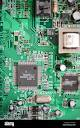
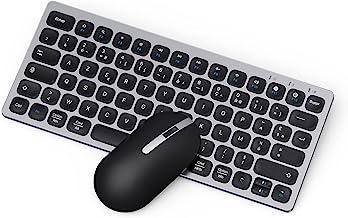

KM4-Pemba, Ponte-Noire
KM4-Pemba, Ponte-Noire contact@tangads.com
contact@tangads.com
Ouvert tous les jours, pendant 24 heures

Souhaitez-vous avoir de l'aide ? Nous appeler
+242 06 858 05 77Ouvert tous les jours, pendant 24 heures
Souhaitez-vous avoir de l'aide ? Nous appeler
+242 06 858 05 77👨 Bien sûr ! Pour commencer, considérez Windows comme une commerçante dans un grand marché. Elle offre une variété de produits et de services pour répondre aux besoins et aux désirs des clients.
• Large gamme de produits : tout comme une commerçante qui propose une large gamme de produits dans son magasin, Windows offre une variété de fonctionnalités et d'applications pour répondre aux besoins des utilisateurs, que ce soit pour travailler, se divertir, ou créer.
• Large gamme de produits : une bonne commerçante s'assure que ses clients peuvent facilement trouver ce dont ils ont besoin dans son magasin. De même, Windows offre une interface conviviale et intuitive pour que les utilisateurs puissent naviguer facilement dans leur ordinateur et accéder à leurs fichiers et applications.

• Service client : une commerçante attentionnée est là pour aider ses clients en répondant à leurs questions et en leur fournissant un service client de qualité. De la même manière, Windows offre un support technique et des mises à jour régulières pour s'assurer que ses utilisateurs bénéficient d'une expérience informatique fluide et sécurisée.
• Évolution et adaptation : une commerçante prospère sait s'adapter aux changements du marché et aux besoins changeants de ses clients. Windows évolue également au fil du temps, en introduisant de nouvelles fonctionnalités et en améliorant ses performances pour rester pertinent dans un environnement informatique en constante évolution.
Pour finir avec cette comparaison, Windows peut être comparé à une commerçante qui offre une gamme variée de produits et de services, qui est facilement accessible, qui fournit un bon service client, et qui évolue pour répondre aux besoins changeants de ses utilisateurs.
Après tout ceci, vous devez savoir que Windows est un système d'exploitation développé par Microsoft. Il est utilisé sur de nombreux ordinateurs personnels et professionnels dans le monde entier. Les versions les plus récentes de Windows incluent Windows 11, Windows 10, Windows 8. Windows est connu pour sa facilité d'utilisation et sa compatibilité avec de nombreux programmes et périphériques. Il est également livré avec une variété d'outils intégrés tels que le navigateur Web Edge, le client de messagerie Outlook et l'application de prise de notes OneNote. Windows est disponible en français, ainsi que dans de nombreuses autres langues.
De nos jours, l’informatique devient omniprésente dans la vie personnelle comme professionnelle. On peut parfois se sentir largué, distancé par ces nouvelles technologies et les ressources existantes pour vous aider ne sont pas tout le temps bien conçues. On vous place devant un ordinateur sans vous apprendre préalablement à l’utiliser.
Imaginez que l’on fasse de même avec votre voiture !
La catastrophe !
N'avez-vous jamais touché un ordinateur ?
Ce n’est pas grave, ce cours pédagogique simple est conçu pour tout le monde.
Certains d’entre vous auront peut-être des réticences vis-à-vis de l’informatique, j’ai fait en sorte de faire des cours faciles à comprendre et peu importe votre niveau. Pour sûr, je vous épargne du blabla livresque.
On ne saurait parler du système d’exploitation sans avoir dit un mot au préalable sur ce qu’est un ordinateur, et sur son fonctionnement. C’est dans cette perspective qu’il sied d’abord de définir un ordinateur, de parler de son fonctionnement, ensuite de présenter Windows, pour notre cas, il s'agira de Windows 11, et enfin les bases de Windows.
Je mets de côté ce langage informatique souvent utilisé pour définir un ordinateur.
😎 Un ordinateur 🖥 c'est un peu comme une cuisine bien équipée.
🤔 Imaginez que vous préparez un plat : vous avez besoin de recettes (instructions), d'ingrédients (données) et d'ustensiles pour cuisiner (matériel).
Dans cette cuisine, le chef, c'est le processeur. Il suit les recettes pas à pas (instructions) pour transformer les ingrédients (données) en plat fini. La mémoire vive (RAM) est comme une grande table de travail où vous préparez vos ingrédients avant de les cuisiner. Le disque dur ou SSD, c'est comme le frigo où vous rangez vos ingrédients pour les garder plus longtemps.
Quand vous cuisinez, vous utilisez aussi des outils comme des couteaux, des casseroles et des poêles. Dans un ordinateur, ce sont les périphériques d'entrée et de sortie comme le clavier, la souris, et l'écran. Ils vous permettent d'interagir avec l'ordinateur, tout comme vous interagissez avec vos aliments et vos ustensiles en cuisine.
En résumé, un ordinateur fonctionne un peu comme une cuisine : il utilise des instructions pour traiter des données à l'aide d'un processeur, stocke temporairement ces données dans la mémoire vive, et les conserve de manière permanente sur le disque dur ou SSD. Et tout cela se fait avec l'aide de périphériques d'entrée et de sortie, tout comme vous cuisinez avec des ustensiles.
L’ordinateur est probablement la machine la plus répandue sur terre. On le trouve sous diverses formes : ordinateur de bureau, ordinateur portable, tablette, smartphone.

Pour vous répondre concrètement, un ordinateur est un appareil électronique qui permet de traiter et de stocker des données. Il est constitué de différents composants qui travaillent ensemble pour effectuer des tâches de manière efficace.
Un ordinateur sert à traiter l’information à partir de programmes enregistrés sur une machine.
Pour les particuliers, ces programmes permettent d’effectuer des tâches personnelles, d’apprendre ou de jouer, de manipuler des photos et des vidéos ou encore de communiquer au travers de la messagerie, ...
Pour les entreprises, ces programmes servent à faciliter le travail et augmenter la productivité des employés.
Les principaux composants d'un ordinateur sont le processeur, la mémoire vive (RAM), le système d'exploitation, le disque dur et les périphériques tels que le clavier, la souris et les écrans.
Certains ordinateurs intègrent également des cartes graphiques et des périphériques supplémentaires tels que des lecteurs de DVD ou des cartes son.
Je vous liste les principaux composants d'un ordinateur :
1 - le processeur (ou CPU) : c'est le cerveau de l'ordinateur, qui exécute les instructions des programmes et effectue les calculs nécessaires ;

2 - la mémoire vive (ou RAM) : elle sert de stockage temporaire pour les données et les programmes en cours d'exécution ;

3 - le disque dur (ou stockage) : il sert de support de stockage à long terme pour les données et les programmes ;

4 - l'alimentation : elle fournit de l'électricité aux différents composants de l'ordinateur ;
5 - la carte mère : elle sert de support physique pour les différents composants de l'ordinateur et permet de les relier entre eux ;

6 - l'écran : c'est l'appareil qui permet de visualiser les informations et les images produites par l'ordinateur ;
7 - le clavier et la souris : ils servent à saisir des données et à naviguer dans les programmes.

• Processeur : imaginez que le processeur est le chef d'orchestre d'un concert. Il dirige tous les musiciens (les programmes et les tâches) pour qu'ils jouent en harmonie et produisent une belle musique (les résultats que vous voyez sur votre ordinateur).
• Mémoire vive (RAM) : la RAM est comme la table de travail d'un artisan. C'est là que vous posez temporairement tous les outils et matériaux dont vous avez besoin pour travailler sur un projet. C'est rapide et facile d'accès, mais ça disparaît dès que vous n'en avez plus besoin.
• Disque dur : le disque dur est comme un placard dans lequel vous rangez tous vos souvenirs et vos affaires importantes. C'est là que vous gardez vos photos, vos vidéos, vos documents et tout ce qui est précieux pour vous. C'est un peu plus lent d'y accéder que sur la table de travail, mais ça reste sécurisé et accessible à tout moment.
• SSD : le SSD est comme une armoire plus moderne et rapide que le placard traditionnel. C'est comme si vous aviez installé des étagères spéciales qui vous permettent de trouver vos affaires beaucoup plus rapidement. C'est parfait pour accéder rapidement à vos fichiers et applications préférés.
• Carte mère : la carte mère est comme le réseau routier d'une ville. Elle relie tous les quartiers (les composants de votre ordinateur) et permet à l'information de circuler librement entre eux. Sans elle, votre ordinateur ne pourrait pas fonctionner correctement.
• Clavier et souris : le clavier et la souris sont comme vos mains et vos doigts lorsque vous interagissez avec votre ordinateur. Le clavier vous permet de taper du texte et d'entrer des commandes, tandis que la souris vous permet de naviguer sur l'écran et de cliquer sur des éléments.
• Écran : l'écran est comme une fenêtre magique qui vous permet de voir ce qui se passe à l'intérieur de votre ordinateur. C'est là que vous pouvez regarder des vidéos, lire des articles, jouer à des jeux et faire tout ce que vous aimez sur votre ordinateur.
Il existe de nombreux autres composants qui peuvent être ajoutés à un ordinateur, tels que des ports USB, des lecteurs de CD/DVD, des cartes réseau, etc. Chacun de ces composants a une fonction spécifique qui contribue au bon fonctionnement de l'ordinateur.
L’utilisateur utilise un clavier et une souris pour communiquer (dialoguer) avec l’ordinateur, et un écran pour l’affichage des informations.
Le clavier, la souris et l’écran sont raccordés à l’ordinateur à l’aide de câbles (USB ou HDMI).
Des matériels complémentaires peuvent aussi être connectés à l’ordinateur : webcam, imprimante, disque dur externe, clé USB, haut-parleurs, ...
L’ordinateur est branché au réseau électrique à l’aide d’une prise électrique et est branché au réseau Internet à l’aide d’un câble ou du Wifi .
En prenant l'image d'une biblothèque, je vais me permettre de vous répondre à travers cette vidéo.
Un système d’exploitation est un ensemble de programmes qui :
1. permet de gérer et de faire fonctionner tous les matériels (composants et périphériques) qui constituent l’ordinateur grâce à des programmes appelés pilotes (ou drivers en anglais) ;
2. gère le bureau, la barre des tâches et l’explorateur de fichier, ... ;
3. lance les applications :
lorsqu’un utilisateur clique sur l’icône d’une application, le système d’exploitation va chercher le code du programme stocké sur le disque dur et le charge dans la mémoire RAM et demande au micro-processeur de l’exécuter ;
4. gère l’interface avec l’utilisateur et affiche les fenêtres dès le démarrage de l’ordinateur.
Les systèmes d’exploitation les plus connus sont :
• Windows pour les ordinateurs de type PC
• MAC OS X pour les ordinateurs Apple.
Une application est un programme (ou logiciel) permettant la réalisation d’une ou de plusieurs tâches ou fonctions dans le cadre d’une activité.
Les applications permettent d’effectuer des tâches personnelles, d’apprendre ou de jouer, de manipuler des photos et des vidéos ou encore de communiquer au travers de la messagerie.
Les applications les plus populaires sont :
• Google pour la recherche d’informations sur Internet
• Outlook pour gérer sa messagerie
• LibreOffice pour le traitement de texte, les calculs
• Word, Excel, Powerpoint respectivement pour le traitement de texte, les calculs et les belles présentations
• les jeux vidéo
• IPhoto pour manipuler ses photos
• Firefox (Mozilla), Edge pour naviguer sur Internet, ...
Lorsqu’un utilisateur clique sur l’icône d’une application, par exemple Firefox, il se passe que : le système d’exploitation va chercher le code du programme sur le disque dur, puis charge le programme dans la mémoire RAM.
Il y a le micro-processeur qui lit chaque instruction du programme et l’exécute.
De son côté, le système d’exploitation envoie la page d’accueil de l’application chargée sur l’écran qui la visualise.
L’utilisateur utilise sa souris et son clavier pour naviguer sur les différents champs et boutons de la page affichée.

Windows est un système d'exploitation développé par Microsoft. Il est une plateforme populaire pour l'utilisation personnelle et professionnelle, et il est disponible en plusieurs versions différentes, y compris Windows 11 (que je vais vous apprendre), Windows 10, Windows 8 et Windows 7. Windows est connu pour son interface conviviale et la prise en charge d'un large éventail de logiciels et de matériel. Il offre également des fonctionnalités telles que la barre des tâches de Windows qui permet aux utilisateurs d'accéder facilement aux programmes fréquemment utilisés, et le menu Démarrer qui fournit un accès rapide aux programmes et aux paramètres.
Lorsque vous allumez votre ordinateur, s’affiche un écran, dit écran de verrouillage, suivi d’une page qui vous invite à saisir un mot de passe.
Premier écran qui apparait lorsque vous allumez votre ordinateur.
Cet écran est suivi d'une page qui vous invite à saisir un mot de passe.
Windows 11 ouvre sur le Bureau et comporte un menu Démarrer
Windows 11 introduit un nouveau menu Démarrer centré, offrant un design épuré et des suggestions personnalisées basées sur votre utilisation.
Le Centre de notifications de Windows 11 est un panneau qui s'affiche lorsque tu cliques sur l'icône de notification dans la barre des tâches. Il fournit un résumé des notifications et des alertes provenant de différentes applications et services, telles que les messages, les e-mails, les mises à jour logicielles, et bien plus encore. Le Centre de notifications te permet de consulter rapidement les nouvelles notifications, de les trier par application, et même d'interagir avec certaines d'entre elles, comme répondre à un message directement depuis la notification.
Le Centre d'activités de Windows 11 est un panneau similaire au Centre de notifications, accessible en cliquant sur l'icône du Centre d'activités dans la barre des tâches. Il fournit un résumé des activités récentes sur votre ordinateur, telles que les documents récemment ouverts, les sites Web visités, les fichiers téléchargés, etc. Le Centre d'activités vous permet de revenir rapidement à une activité précédente en cliquant sur l'élément correspondant dans la liste, ce qui facilite la reprise de votre travail là où vous l'aviez laissé.

Celui qui a la forme d'un accent circonflexe permet de savoir quels programmes sont ouverts en arrière-plan quand on clique dessus.
Pour le cas présent, en cliquant dessus, voici les programmes qui tournent en arrière-plan :
Ici la sixième icône marque le niveau de la batterie pour ceux qui utilisent un laptop.
La quatrième icône nous renseigne sur notre connexion Wi-Fi.
La cinquième icône est celle du son.
L'icône sous forme de cloche ouvre le calendrier et les notifications de notifications.
Voici présenté très brièvement le système d’exploitation Windows 11.
Il y a bien des points que je ne vous ai pas appris, parce que vous allez les découvrir dans la pratique.
👨 Avant tout, je dois vous dire que les captures ici sont celles de Windows 10 et Windows 11.
Lorsque vous allumez votre ordinateur, s’affichent d’abord un écran dit écran de verrouillage, ensuite la page vous invitant de saisir votre mot de passe, et enfin un écran dit Bureau.
C’est l'écran qui apparaît après celui qui vous invite à entrer votre mot de passe.
Vous pouvez y placer en raccourci les programmes que vous utilisez très souvent.
Remarquez tout en bas, cette partie s’appelle la barre de tâches.
La barre des tâches permet de lancer le menu Démarrer, d’effectuer une recherche sur son ordinateur, d’afficher des raccourcis vers ses programmes préférés, d’afficher des notifications d’applications ou encore des notifications de Windows.
La barre des tâches peut être personnalisée, elle peut par exemple être masquée afin de réaliser un gain d’espace à l’écran, on peut aussi lui ajouter des raccourcis vers ses programmes favoris.
Sur cette barre , il y a :

Lorsque l’on clique sur le menu Démarrer, apparaît ce qui suit

1- Ces éléments sont déjà expliqués ;
2- ici, il s’agit des programmes les plus utilisés ;
3- votre compte.
De l’autre côté, vous avez l’ensemble des vignettes, parmi lesquelles : le Calendrier, le Mail, le navigateur web Edge, etc.
Cortana, présente dans Windows 10, est aussi présente dans Windows 11, mais son rôle et son intégration ont été significativement réduits par rapport à ses versions précédentes.

Comme c'est dit dans la vidéo, l'explorateur de fichiers permet la gestion du contenu de votre ordinateur.
Il y a 3 possibilités :
- 1ère possibilité : il suffit de cliquer sur ledit explorateur.
Lorsque vous cliquez dessus, vous avez en face de vous
 les principaux dossiers de votre ordinateur : Bureau, Documents (pour contenir tous les fichiers texte), Images (pour contenir tous les fichiers images), Musique (pour contenir la musique),...
les principaux dossiers de votre ordinateur : Bureau, Documents (pour contenir tous les fichiers texte), Images (pour contenir tous les fichiers images), Musique (pour contenir la musique),...
Après ces dossiers, vous avez les Périphériques et lecteurs, ...
- 2ème possibilité : il suffit de faire un clic droit sur le menu Démarrer, puis de cliquer sur Explorateur de fichiers

- 3ème possibilité : il suffit de cliquer simultanément sur les touches Windows et E.
Pour créer un dossier, il suffit de faire un clic droit à l’endroit où le dossier va se retrouver, de se positionner sur Nouveau, de glisser jusqu’à Dossier, de cliquer sur Dossier.


Saisissez le nom du dossier sur la zone en surbrillance, puis validez.
Pour créer un fichier texte, il suffit de se positionner à l’endroit où le fichier va se retrouver, par exemple dans le dossier Documents, de faire un clic droit, de se positionner à Nouveau, de cliquer sur Document texte.


Saisissez le nom que vous donnez à votre document texte (fichier texte), puis validez. Le nom est à saisir sur la partie en surbrillance.
Pour lire ce fichier texte, il suffit de double-cliquer dessus. Il s’ouvre avec un petit logiciel dit Editeur de texte, nommé Bloc-notes.
Pour afficher l'icône "Ce PC" sur votre bureau sous Windows, vous pouvez suivre les étapes suivantes :
cliquez avec le bouton droit de la souris sur le bureau et sélectionnez "Personnaliser" ;
dans la fenêtre "Paramètres de personnalisation", cliquez sur "Thèmes" dans le menu de gauche ;
dans la section "Paramètres relatifs aux icônes du bureau", cochez la case "Ce PC" (anciennement "Ordinateur") ;
cliquez sur "Appliquer" puis sur "OK" pour enregistrer les modifications.
L'icône "Ce PC" devrait maintenant apparaître sur votre bureau.
Suivre la vidéo ci-dessous.
Pour épingler un programme à la barre des tâches, il suffit de faire un clic droit sur l’icône du programme, puis de cliquer sur Epingler à la barre des tâches.

Le Mode Sans Échec est un mode de démarrage spécial dans lequel Windows 10 démarre avec un ensemble minimal de pilotes et de services. Cela peut être utile pour résoudre des problèmes liés à des logiciels ou des pilotes tiers qui pourraient interférer avec le fonctionnement normal de Windows.
1 - Redémarrez votre ordinateur.
2 - Appuyez sur la touche Shift tout en cliquant sur Redémarrer dans le menu Démarrer ou à l'écran de connexion.
3 - Menu de démarrage avec la touche Shift.
4 - Sélectionnez Dépannage > Options avancées > Paramètres de démarrage.
5 - Cliquez sur Redémarrer.
6 - Après le redémarrage, appuyez sur la touche 5 ou F5 pour sélectionner le Mode Sans Échec avec mise en réseau. Vous pouvez également choisir le Mode Sans Échec standard en appuyant sur la touche 4 ou F4.
1 - Appuyez sur les touches Windows + R pour ouvrir la boîte de dialogue Exécuter.
2 - Tapez msconfig et appuyez sur Entrée.
3 - Dans l'onglet Général, cochez l'option Démarrage sélectif et sélectionnez Mode sans échec.
4 - Cliquez sur OK et redémarrez votre ordinateur.
Cliquez sur le bouton ci-dessous pour télécharger ce cours qui s'ajoute à ce module 😊
Bonne chance 😇
Demandez votre Certificat de Félicitation 😇
Inscrits
Test
Admis
Excellents